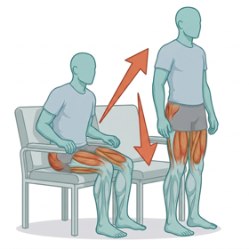
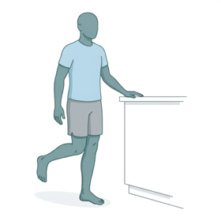
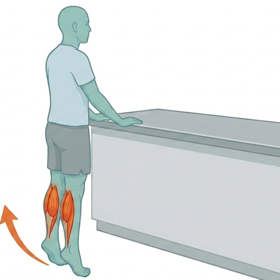

Made for home health.
For therapy and skilled nursing visits.
Made for home-health clinicians.
Your visit recap, turned into a clear draft. CareDraft AI works on your phone—even offline after setup.
Review every draft. Offline dictation depends on your phone’s speech settings.
AndroidApple · iOS
For therapy and skilled nursing visits.
Keep drafting, even without a connection.
Review, edit, and choose what to share.
Meet CareDraft AI
Built for home health. Works offline.Your words in. A clearer draft out.
A few words from you. A readable draft.
01 / Your quick recap
“PT f/u. Pt reports easier chair transfers, still unsteady with turns. Gait w RW, CGA; better foot clearance after cues. Practiced sit-to-stand, less UE push-off. Continue skilled gait/balance work per POC.”
Recap the visit in your own words. CareDraft helps turn your shorthand into a readable narrative.
02 / Your note, organized
Draft for reviewPhysical therapy · routine visit
The patient was seen for a physical therapy follow-up visit and reports easier chair transfers, though they remain unsteady with turns. Gait was observed with a rolling walker, requiring contact guard assist, with improved foot clearance following cues. Skilled intervention included sit-to-stand practice, noting decreased upper extremity push-off. Continued skilled physical therapy is indicated to progress gait and balance work as outlined in the plan of care.
Generated by CareDraft AI
Actual CareDraft AI output from sample visit recaps, shown without edits. Results vary; review every draft against the details you provided.
How it works
Recap the visit by voice or text. Leave out patient identifiers.
Turn your recap into a narrative or use your own note template.
Check the facts, numbers, and medications. Edit before approving.
Share reviewed text or a PDF with your approved destination.
The visit toolkit
From take-home plans to the drive between visits.
Build a program with illustrated exercises and clear patient instructions.

Sit to Stand
3 sets × 10 reps · daily

Single Leg Stance
3 × 30 sec holds · at counter

Standing Heel Raises
2 sets × 15 reps · daily
Read a medication list from a photo, right on your phone. Review every detail before saving.
Lisinopril
10 mg · once daily · oral
Metformin
500 mg · twice daily · with meals
Apixaban
5 mg · twice daily · oral
Arrange your visits, open your route, and keep track of the miles.
Bring plain-language education together in one patient handout.
Your take-home guide
Everyday safety reminders
A safer space for daily activities
Pacing and planning your day
Keep trips and vehicle expenses organized throughout the month.
Illustrative previews with sample content. Explore setup and privacy details.
Simple to start. Simple to keep using.
Start without an account. Draft without a subscription or per-note AI charges.
Explore supported platformsRecurring AI fee
Refers to recurring AI fees. App pricing is separate.
Security
AI drafting stays on your phone. Saved records are encrypted.
Every note, transcript, and recording is encrypted on the device with authenticated encryption.
Your PIN protects the encryption key through PBKDF2-HMAC-SHA512 key derivation.
Open with fingerprint or face using your phone's secure hardware. The PIN stays as the root of trust.
One recovery code, generated on your device, shown once. It's the only spare key — and it's in your pocket, not on our servers.
No account for note drafting and no advertising trackers. CareDraft does not operate a clinical-content backend. Android photo-to-text processes images on-device; its Google ML Kit SDK reports technical usage and diagnostics to Google.
Model downloads and address suggestions use the network. Your speech provider may process dictation online; exports and navigation go where you choose.
Draft notes without sending your recap to a cloud AI service.
Use a PIN or biometric unlock. Keep your recovery code somewhere safe.
Review before exporting. Dictation and connected tools have their own privacy settings.
Use de-identified visit recaps, review every draft, and follow your organization’s policies.
The details
Devices, privacy, and what happens under the hood.
CareDraft supports Android and Apple (iOS). On-device AI needs sufficient available memory and storage; compatibility and drafting speed depend on your device and the model you choose.
After the model download, AI note drafting runs offline. You can also type notes and use local records without a connection. Offline dictation depends on your phone having offline speech recognition available. Address suggestions and external map services need their own connections.
Compare the draft with your visit recap and verify every clinical fact, number, side, medication, and plan. AI can misinterpret shorthand or introduce errors. The examples show drafting behavior, not complete documentation templates; your final note must reflect the visit and your organization’s requirements.
CareDraft uses your device's configured speech-recognition service. With offline recognition available, it can transcribe locally; on Android, the selected provider may use network processing depending on your settings. CareDraft LLC does not receive the audio or transcript. The CareDraft model drafts the note on your phone.
CareDraft is intended for de-identified, post-encounter drafting. Local processing and encryption do not by themselves establish that a workflow meets your organization's requirements. Check with your organization before using it for clinical work, and read the Privacy Policy and Terms of Use.
CareDraft E2B is a roughly 3.4 GB download, with 8 GB phone RAM minimum and 12 GB comfortable. CareDraft E4B is roughly 5.3 GB, with 12 GB phone RAM recommended. Allow room for the download and your saved records. Performance depends on available memory, device, and note length.
CareDraft E2B and E4B are our own fine-tuned versions of Google's Gemma models. Fine-tuning means giving an AI additional training for a specific job — in this case, organizing home-health dictation into clinical notes. They run on your phone after download. This focused training does not guarantee accuracy; every draft still needs clinician review.
Yes. We will continue updating CareDraft's AI models as technology improves, with a focus on note quality, reliability, and performance on your phone. Every draft will still need your review and approval.
Our downloadable models were trained on synthetic examples: fictional home-health visit dictations paired with example notes. These cover physical therapy, occupational therapy, speech therapy, and skilled nursing. Your notes and dictation are not collected to train these models.
Saved notes, transcripts, and recordings use AES-256-GCM encryption. Your PIN protects the encryption key through PBKDF2-HMAC-SHA512 key derivation, with biometric unlock supported. CareDraft does not operate a clinical-content backend or keep a server backup of your notes. Save your recovery code: losing both it and your PIN means your data cannot be recovered.
Initial model downloads require a connection. Dictation uses your device’s speech service and may be processed online, depending on your provider and settings. Online address suggestions start off. If you enable them, your typed search and search area go to Photon (Komoot). Manual entry works offline. Opening a route shares it with your chosen maps app. Exports go to the destination you select.
No account is required for note drafting. CareDraft has no advertising trackers, and your notes and dictation are not collected to train its AI models. Android photo-to-text processes images on-device, but its Google ML Kit SDK sends technical usage and diagnostic data to Google. See the Privacy Policy for details.
Use the recovery code you saved at setup to unlock and set a new PIN. If you lose both the PIN and the recovery code, your data is unrecoverable — we hold no keys and no copies, so there's no master unlock. Keep that code somewhere safe.
CareDraft for home health
No account. No subscription. Built around your work.
Android & Apple (iOS)
Explore CareDraft AIBuilt by a practicing home-health clinician.